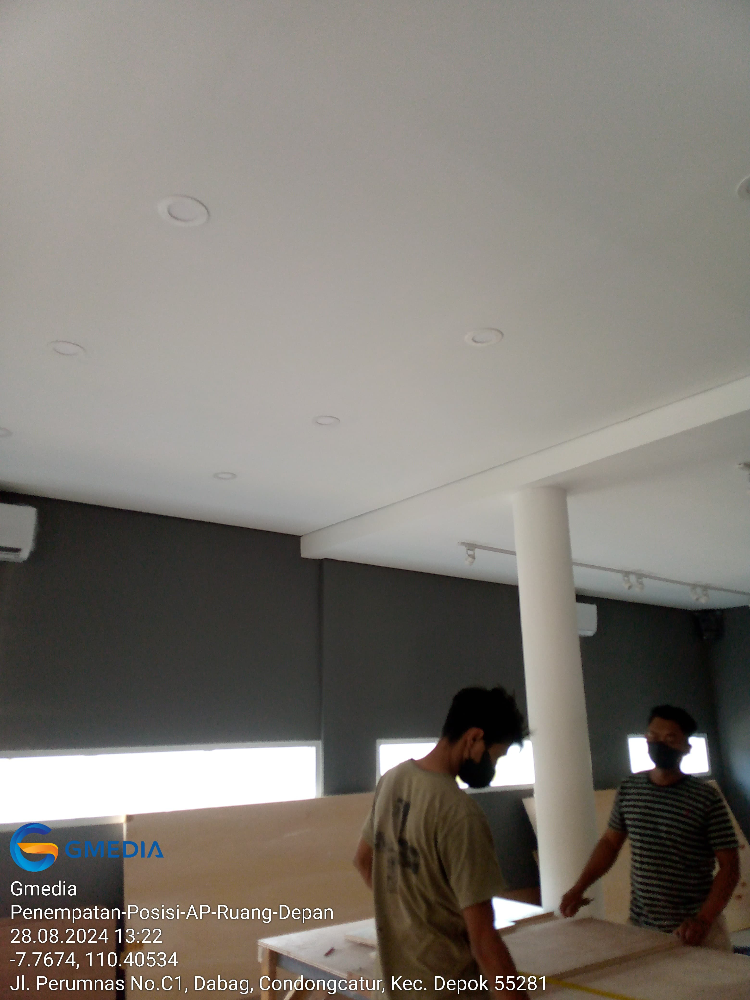

Gambaran Proyek
Kalola Coffeeshop Perumnas Yogyakarta membutuhkan survey infrastruktur jaringan sebagai tahap awal sebelum instalasi koneksi internet dan jaringan internal.

Survey ini berfokus pada evaluasi jalur kabel, identifikasi kebutuhan perangkat jaringan, serta penentuan penempatan perangkat yang optimal guna memastikan konektivitas yang stabil dan operasional jaringan yang efisien.
Table of Contents
Tujuan Survey
- Survey Jalur Kabel: Menilai jalur potensial untuk instalasi kabel UTP dan sumber listrik.
- Survey Kebutuhan Perangkat: Mengidentifikasi perangkat jaringan yang dibutuhkan berdasarkan cakupan dan kapasitas pengguna.
- Survey Penempatan Perangkat: Menentukan lokasi terbaik untuk router, switch, dan access point.
Tanggung Jawab
- Koordinasi Stakeholder: Berkoordinasi dengan Person in Charge (PIC) terkait jalur kabel, penempatan perangkat, dan kebutuhan teknis.
- Assessment Lokasi: Melakukan evaluasi langsung terhadap tata ruang, ketersediaan listrik, serta potensi pengembangan jaringan.
- Rekomendasi Teknis: Memberikan rekomendasi perangkat dan penempatan berdasarkan hasil survey jaringan.
Hasil Survey
Rekomendasi Perangkat Jaringan
- Router: MikroTik RB2011UiAS-RM
- Access Point: 3 × UniFi AC Lite + PoE Adapter
- Switch: D-Link DGS-108GL
- Konektor RJ45: 25 pcs
- Kabinet Jaringan: Box Panel ukuran 50 × 60 cm
- Kabel UTP: Commscope Cat 5e
- Power Extension: Stop kontak 6 lubang + stacker
- Kabel Power: 2 meter
Rencana Penempatan Perangkat
- Lokasi Server / Router: Back Office (Ruang Support Kasir)
- Access Point – Area Depan: Area tempat duduk pelanggan (Front Area)
- Access Point – Area Tengah: Area duduk pelanggan bagian tengah
- Access Point – Area Belakang: Area pelanggan / staf bagian belakang
| Area / Aktivitas | Dokumentasi Gambar |
|---|---|
| Survey Lokasi – Area Depan |  |
| Survey Lokasi – Area Tengah |

|
| Survey Lokasi – Area Belakang |

|
| Rencana Penempatan Server |

|
{kind=link}
Analisis Jaringan
- Optimasi Cakupan: Tiga access point memastikan cakupan Wi-Fi merata di seluruh area pelanggan dan operasional.
- Skalabilitas: Router MikroTik dan switch yang dipilih mendukung pengembangan bandwidth dan penambahan perangkat di masa depan.
- Structured Cabling: Perencanaan jalur kabel yang rapi meminimalkan interferensi dan mempermudah proses maintenance.
Hasil Akhir
- Berhasil menyelesaikan survey infrastruktur jaringan Kalola Coffeeshop secara menyeluruh.
- Menyediakan daftar perangkat dan rencana penempatan yang jelas sebagai acuan instalasi.
- Memungkinkan proses implementasi berjalan lebih efisien dengan risiko revisi yang minimal.
- Menunjukkan kompetensi dalam perencanaan pra-instalasi dan koordinasi teknis dengan klien.